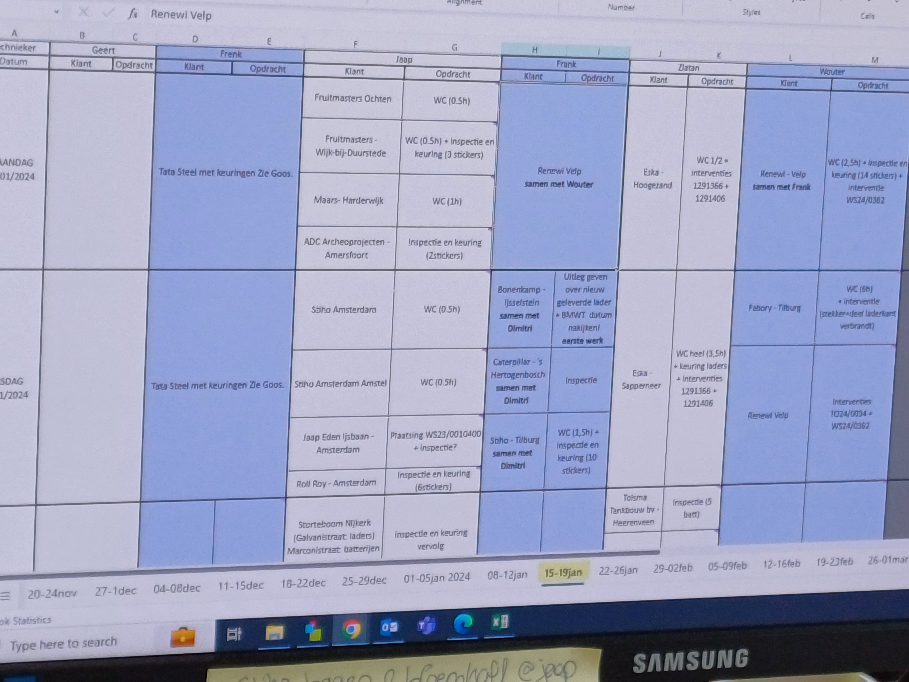

Voormiddag
Vandaag mocht ik een dag meedraaien op de administratieafdeling. De afdeling stuurt werkbonnen naar techniekers die vervolgens de weg op gaan om batterijen bij de klant te herstellen. Om het overzicht te bewaren wordt er voor iedere week een planning opgemaakt. Die ziet er als volgt uit:

.Om miscommunicatie met de klant voorkomen, wordt het referentienummer van de herstelde batterij als opmerking op de planning in Excel toegevoegd. De planning is een overzichtelijk geheel van wat de techniekers wekelijks moeten doen. Echter verandert dit voortdurend. Het maken van een planning duurt lang en diegenen die dit opstellen, dragen een grote verantwoordelijkheid. Inkomende mails van klanten checkt iedere afdeling via Outlook. Wat Outlook kenmerkt, zijn de kleuren: op de afdeling 'Customer Service' stelt iedere kleur een werknemer voor, op de administratieafdeling geeft iedere kleur de toestand van de mail weer. Reparaties die moeten gebeuren voor de klant zet men in transferorder in Vario.
Rond half tien nam ze me mee om een herstelde batterij op te halen in het kleine magazijn. Zo leerde ik het magazijn ook een beetje kennen. Referentienummers van batterijen die gerepareerd moeten worden, worden opgeschreven op post-itjes. Telefoontjes van klanten wiens batterijen verkeerd gerepareerd zijn kwamen binnen om 8.30 uur of 14 uur. De techniekers die naar de klant (die bedrijven zijn) rijden, worden gevolgd op de website "prodongle.com". Tijdens het maken van de planning wordt ook beroep gedaan op Google Maps, die de duur van de route die nodig is om van klant A naar klant B te rijden berekent. Om 11.30 uur kreeg ik mijn eerste opdracht: digitale vullijsten laten kloppen met papieren vullijsten. Hier moest ik overtypen waar nodig. Dit duurde niet zo lang, maar was een nuttige bezigheid. Nadien heb ik gekeken hoe Ingrid, een collega van Marjolein, transferorders verwerkte en hierbij wat technische informatie gaf over batterijen.
Middagpauze
Om 12.30 uur was het tijd voor middagpauze.
Namiddag
Na enkele uren gekeken te hebben hoe Ingrid de werkbonnen in Vario verwerkte, mocht ik dit zelf doen. Vervolgens mocht ik ook een paar invullijsten controleren. Dit alles onder het toeziend oog van Ingrid. Ik merkte ook op dat Excel hier vaak gebruikt wordt. Om 17 uur was de dag voorbij.
Mijn dag in 1 woord
toekijken
'Toekijken', omdat ik vandaag meer geobserveerd heb dan zelf dingen gedaan. Hopelijk mag ik morgen meer doen. Desalniettemin was het vandaag -net als gisteren- een leerrijke dag!
De administratieafdeling van Ecobat.